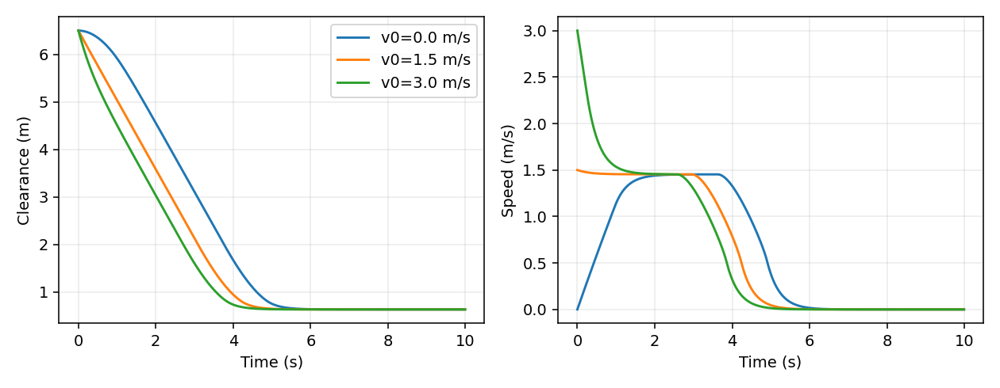
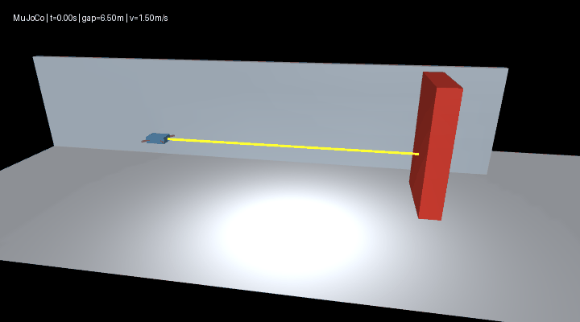

MuJoCo 室内无人机安全制动与定高悬停 / Indoor UAV safe braking and altitude hold¶
场景与模型 / Scene and model¶
无人机沿室内通道接近固定障碍物，水平速度连续衰减并在障碍物前停止。模型采用水平、竖直两个平移自由度，固定航向；保留重力、质量、阻尼和接触。该模型研究纵向制动与高度保持，不描述六自由度姿态和旋翼气动。
The UAV approaches a fixed obstacle in an indoor corridor and brakes continuously. Two translational degrees of freedom retain gravity, mass, damping and contact with fixed heading. The model covers longitudinal braking and altitude hold rather than six-degree-of-freedom attitude or rotor aerodynamics.

源码 / Source: src/air/mujoco_uav_range_neural_braking/。
控制结构 / Control structure¶
设表面间距为 \(d\)、前进速度为 \(v\)、总质量为 \(m\)。几何参照控制器使用：
Let \(d\) denote surface clearance, \(v\) forward speed and \(m\) total mass. The geometric reference controller uses:
场景质量由 MuJoCo 模型读取，含机身与支臂，共 0.52 kg；控制周期 0.01 s。0.8 m 为减速参考值，不是停车距离保证。控制过程通过施力改变运动，不在制动时清零速度。场景同时定义朝前测距射线，几何间距当前用于建立参照基线。
Mass is read from the MuJoCo body, including the airframe and arms, totaling 0.52 kg. The control period is 0.01 s. The 0.8 m parameter is a braking reference rather than a guaranteed stop gap. Forces change motion without directly resetting velocity. A forward rangefinder is defined in the scene; geometric clearance establishes the reference baseline.
环境与入口 / Environment and entry points¶
Python 3.10–3.11，MuJoCo 3.12.0。ROS launch 使用 Ubuntu 22.04 / ROS 2 Humble。在模块目录执行：
Python 3.10–3.11 and MuJoCo 3.12.0. ROS launch uses Ubuntu 22.04 / ROS 2 Humble. Run from the module directory:
python -m pip install -r requirements.txt
python main.py --headless --controller reference --output results
python main.py
python evaluate.py --output results --render
python -m pytest -q
main.py 输出轨迹 CSV 和指标 JSON；不带 --headless 时显示交互窗口。evaluate.py 输出三组速度对照、场景图和 GIF。旧入口 src/ground/mujoco_drone_distance_stop/main.py 转发到同一模块。
main.py writes trajectory CSV and metric JSON; omitting --headless opens the interactive viewer. evaluate.py exports speed comparisons, a scene image and a GIF. The original ground-directory entry forwards to this module.
source /opt/ros/humble/setup.bash
ros2 launch ./launch/main.launch.py controller:=reference output:=/tmp/uav_braking
launch/main.launch.py 启动无窗口 MuJoCo 仿真；launch/ros_node.launch.py 提供 ROS 2 测距、控制与状态话题。range、reference 和训练后的 mlp 控制器均可由参数选择。
launch/main.launch.py runs the headless MuJoCo simulation; launch/ros_node.launch.py provides ROS 2 range, control and state topics. The range, reference and trained mlp controllers are selectable by argument.
Windows 环境下 16 项物理、传感器、数据和 MLP 检查通过。ROS 2 Humble 容器中，测距节点成功初始化并完成一次仿真步进；默认测距控制场景运行 1000 步无碰撞，最小间距为 0.668331 m。
Sixteen physics, sensor, dataset and MLP checks pass on Windows. The ranging node initializes and advances one simulation step in a ROS 2 Humble container. The default range-control scene completes 1000 steps without contact, with a 0.668331 m minimum clearance.
仿真结果 / Simulation results¶
起始机身中心 x=-7 m，障碍物中心 x=0 m，参考高度 1.2 m，每组运行 10 s。以下为本场景实测，不代表所有初始条件下的安全保证。
The airframe starts at x=-7 m, the obstacle at x=0 m, and reference height is 1.2 m. Each episode runs for 10 s. These measurements apply to the specified scene and do not guarantee safety for arbitrary initial conditions.
| 初速度 / Initial speed (m/s) | 碰撞步数 / Contact steps | 最小间距 / Minimum clearance (m) | 最终速度绝对值 / Absolute final speed (m/s) |
|---|---|---|---|
| 0.0 | 0 | 0.629500 | < 0.000001 |
| 1.5 | 0 | 0.629413 | < 0.000001 |
| 3.0 | 0 | 0.629409 | < 0.000001 |
三组初始高度均等于参考高度，最大高度误差为 0；另以 0.1 m 高度偏移检查恢复，末端误差小于 0.005 m。三组制动、一次高度恢复及三组无效参数检查共 7 项通过。
Initial altitude equals the reference in all three episodes, giving zero maximum height error. A separate 0.1 m height perturbation recovers to within 0.005 m. Seven checks cover braking, height recovery and invalid parameters.


文件职责 / File responsibilities¶
| 文件 / File | 职责 / Responsibility |
|---|---|
scene.xml |
物理体、碰撞和前向测距 / Bodies, contact and forward ranging |
simulation.py |
场景参数、物理控制与指标 / Scenario parameters, physics control and metrics |
main.py |
完整运行与数据导出 / Complete execution and data export |
evaluate.py |
多速度评估与图像输出 / Speed evaluation and visual output |
launch/main.launch.py |
ROS launch 进程启动 / ROS launch process entry |
test_simulation.py |
制动、恢复和参数检查 / Braking, recovery and parameter checks |
参考 / References¶
默认运行采用前向测距与距离差分速度，几何控制仅作参照。详见测距与数据集。 / Default execution uses forward ranging and finite-difference speed; geometric control is a reference. See Ranging and datasets.